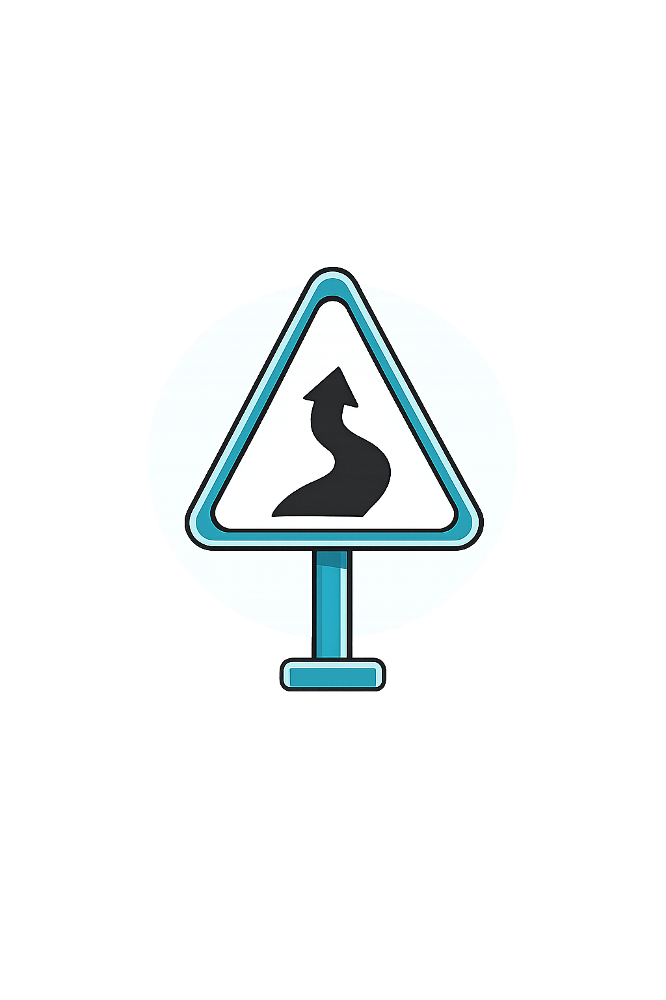

تكنولوجيا القيادة

تعلّم معاني اللوحات المرورية المختلفة، وكيف تساعدك على القيادة الآمنة والالتزام بأنظمة المرور.
تُعد اللوحات المرورية وسيلة أساسية لتنظيم حركة السير، وإرشاد السائقين، وتحذيرهم من المخاطر المحتملة على الطريق. ويساعد فهم معانيها على اتخاذ القرارات الصحيحة أثناء القيادة، والالتزام بأنظمة المرور، وتعزيز السلامة لجميع مستخدمي الطريق.
يدل على اللوحات التحذيرية التي تنبه السائق إلى وجود مخاطر محتملة أو تغيرات في الطريق.
يدل على اللوحات التنظيمية (المنع والتقييد) التي توضح الممنوعات والأوامر الصارمة.
يُستخدم للوحات الإلزامية أو الإرشادية الخاصة بالخدمات والمرافق العامة.
يُستخدم للوحات الإرشادية على الطرق السريعة لتحديد الاتجاهات والمسافات نحو المدن.
تنبه السائق إلى وجود خطر أو تغيير في الطريق.
توضح الممنوعات والالتزامات التي يجب التقيد بها.
تساعد السائق على معرفة الاتجاهات والخدمات.
توضح حق الأولوية بين المركبات.
تستخدم في مواقع الصيانة وأعمال الطرق.
فهم اللوحات المرورية يساعد السائق على اتخاذ القرارات الصحيحة أثناء القيادة، والالتزام بالأنظمة، وتقليل احتمالية وقوع الحوادث أو ارتكاب المخالفات.